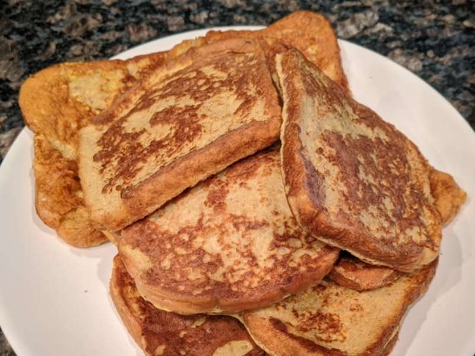

Anabolic French Toast

Description
The Anabolic French toast is deceivingly delicious and packed with
protein to help you get huge.
Ingredients
- 2 eggs and 100g of egg whites
- sugar free syrup
- 4 shakes of ground cinnamon
- 4 slices of bread of choice
- frozen blueberries
- 1 teaspoon of vanilla extract
Steps
- Whisk together eggs, egg whites, cinnamon and vanilla extract in a bowl
- On medium/high heat, add oil spray to griddle
- Soak each slice of bread with the mixture in the bowl and place in the griddle until
golden brown on each side
- Stack the slices of bread on a plate and top with frozen blueberries and syrup